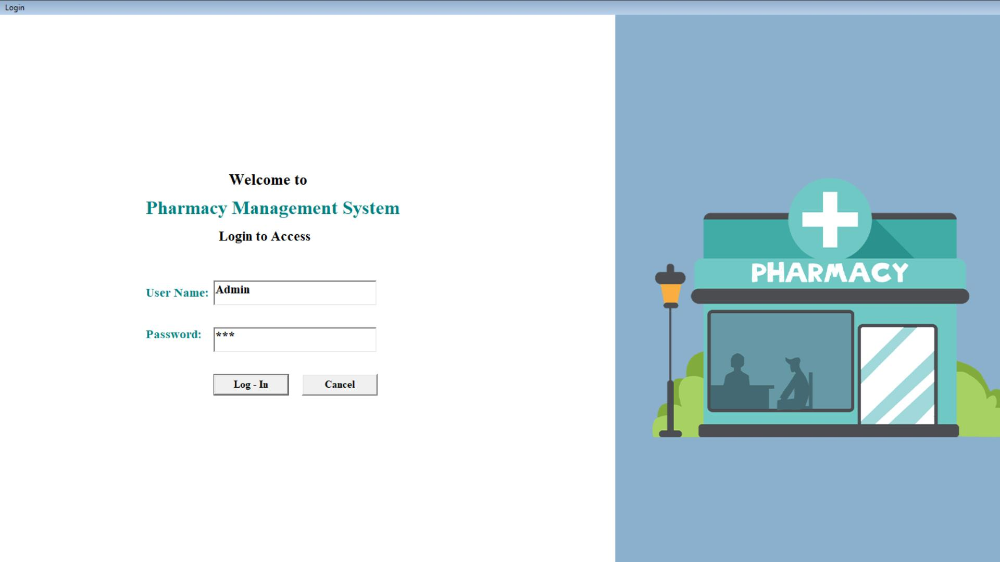
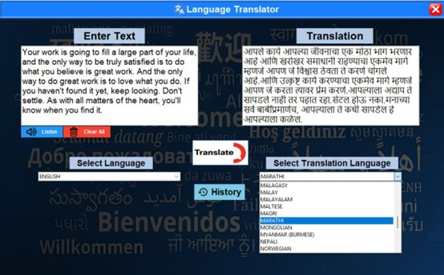

Portfolio
My responsive portfolio website serves as a digital showcase of my skills and projects. Crafted with HTML,
CSS, and JavaScript, it seamlessly adapts to various devices—whether viewed on a large desktop screen or a
pocket-sized smartphone. Here’s what you’ll find:
• Project Showcase: Explore my work—web development projects, design samples, and more. Each project card
provides a glimpse into the technologies used and the problem solved.
• Contact Information: Connect with me! Whether you’re a fellow developer, potential collaborator, or just
want to say hello, you’ll find ways to reach out.
• Responsive Design: The website’s layout adjusts gracefully, ensuring a pleasant experience for every
visitor. No matter the screen size, the content remains accessible and visually appealing.
• Clean and Minimalistic: I’ve kept the design clutter-free, focusing on readability and usability. After all,
simplicity is key.

To-Do List
This minimalist to-do list application features a light blue-to-white gradient background. The central white
rectangular box represents the app window. Users can input tasks in a light gray area at the top, with an
adjacent “Add” button. Icons for editing and deleting tasks appear alongside. The overall design prioritizes
functionality without distractions.
Visit Site ↗

Digital Clock
The Digital Clock Web App is a sleek and modern timekeeping tool that displays the current time in a clear
and minimalist format. Whether you’re managing your work schedule, tracking deadlines, or simply curious about
the time, this app has you covered.
• Real-Time Display: The clock updates dynamically to show the current time, including hours, minutes, and
seconds.
• Responsive Design: The app adapts seamlessly to different screen sizes, making it usable on desktops,
tablets, and mobile devices.
Visit Site ↗

Weather Website
A dynamic weather app built with HTML, CSS, and JavaScript. It fetches real-time weather data from an API and
displays it in a responsive, user-friendly interface. Key features include current weather conditions,
temperature, humidity, and error handling for invalid inputs.
• Current Temperature: Display the current temperature prominently (e.g., “27°C”) using large, easy-to-read
text.
• Location Details: Include the city name and country code (e.g., “Nagpur, IN”) to specify the weather
location.
• Feels Like Temperature: Add a secondary temperature reading (e.g., “31°C Feels Like”) to account for factors
like humidity and wind chill.
• Humidity Percentage: Indicate the humidity level (e.g., “100%”) for additional context.
Visit Site ↗

Netflix Homepage
This redesigned Netflix homepage features a sleek and captivating layout. The top section boldly promotes
“Unlimited movies, TV shows, and more,” inviting users to explore the vast content library. The dynamic
montage of movie and show thumbnails hints at the diverse entertainment options available. Three key
features—watching on TV, offline downloads, and child profiles—are highlighted with eye-catching visuals. The
FAQs section provides quick answers, ensuring a seamless user experience. Join the streaming revolution!
Visit
Site ↗

Data Management for the Pharmacy
The project is "Data Management for the Pharmacy". We had done the work of the pharmacy by the use of
computer
system.
This software is fully automated. This software will do the job for purchase
and sale of pharmacy medicines of various companies by using computerized
system. We can give all detail of particular medicine, which can sale &
purchase the product in pharmacy shop and also give information about the
stock of shop and what do you order from purchaser. We can view the sale
report and purchase report properly for our convenience.
Softwares:
• MICROSOFT WINDOWS XP
• VISUAL BASIC 6.0
• MICROSOFT ACCESS - 2010
Source Code ↗

Real-Time Language Transator
This presentation introduces a real-time language translator application developed using Python's Tkinter library and the Googletrans API. The application provides a user-friendly interface that allows users to instantly translate text between different languages. It features an automatic language detection mechanism, which identifies the source language and translates the text to a user-selected target language. The design is optimized for efficiency, offering immediate translation results with every keystroke, making it an ideal tool for quick and accurate communication across language barriers.
Source Code ↗